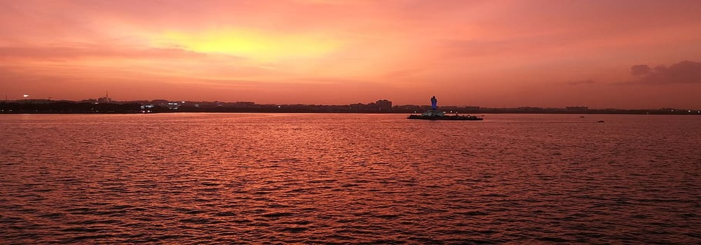

PLACES IN JAMMU&KASHMIR
Gulmarg is a picturesque town located in the Union Territory of Jammu and Kashmir, India. Situated in the Pir Panjal range in the western Himalayas, Gulmarg is renowned for its stunning natural beauty, lush landscapes, and its status as a popular hill station and skiing destination. Gulmarg is not only a hub for adventure seekers but also a place where visitors can experience the warm hospitality and rich culture of Kashmir. The local markets offer traditional handicrafts, Pashmina shawls, and other unique Kashmiri products.
WebsitePahalgam is another enchanting town located in the Anantnag district of the Union Territory of Jammu and Kashmir, India. Known for its breathtaking landscapes, lush green meadows, and the Lidder River that meanders through the town, Pahalgam is a popular destination for nature lovers and those seeking a tranquil retreat. Pahalgam offers a range of adventure activities, including trekking, horse riding, and white-water rafting on the Lidder River. The surrounding mountains provide opportunities for camping and exploring the diverse flora and fauna of the region.
WebsiteYusmarg, also known as Yusufmarg, is a lesser-known but incredibly beautiful hill station in the Budgam district of Jammu and Kashmir, India. Tucked away in the Pir Panjal range, Yusmarg is a peaceful retreat surrounded by dense forests, meadows, and snow-capped peaks. Yusmarg is characterized by its pristine natural beauty. The landscape is adorned with lush green meadows, dense forests of pine and fir trees, and snow-capped mountains, creating a tranquil and picturesque setting.
WebsiteGurez Valley is a remote and breathtakingly beautiful valley located in the northern part of the Union Territory of Jammu and Kashmir, India. Tucked away in the high Himalayas, Gurez is known for its stunning landscapes, pristine rivers, and traditional villages. Gurez Valley is situated along the Line of Control (LoC), the de facto border between India and Pakistan, in the northern region of Jammu and Kashmir. It is surrounded by snow-capped peaks, including the Habba Khatoon range.
Website
Srinagar is the largest city and the summer capital of the Union Territory of Jammu and Kashmir, India. Renowned for its stunning natural beauty, houseboats, and historic gardens, Srinagar is located in the picturesque Kashmir Valley. Srinagar, with its combination of natural beauty, historical sites, and cultural richness, remains a top destination for tourists seeking a memorable experience in the enchanting Kashmir Valley.
Patnitop is a hill station in the Ramban district of Jammu and Kashmir, India. It's located on the Jammu-Srinagar National Highway, 112 km from Jammu. The elevation of Patnitop is 2,024 m. Situated on the Shivalik Range of the Himalayas, Patnitop is known for its scenic beauty, lush green landscapes, and pleasant climate. Patnitop, with its tranquil ambiance and diverse range of attractions, offers a refreshing escape for those seeking a break from the hustle and bustle of urban life. Whether it's adventure activities, religious sites, or simply enjoying the natural beauty, Patnitop has something to offer for every kind of traveler. Patnitop, with its tranquil ambiance and diverse range of attractions, offers a refreshing escape for those seeking a break from the hustle and bustle of urban life. Whether it's adventure activities, religious sites, or simply enjoying the natural beauty, Patnitop has something to offer for every kind of traveler.
Sanasar is a serene and lesser-known destination located near Patnitop in the Udhampur district of the Union Territory of Jammu and Kashmir, India. This picturesque meadow is surrounded by dense pine and cedar forests, offering a tranquil escape and opportunities for various outdoor activities. Sanasar's combination of natural beauty, adventure activities, and a peaceful environment makes it a hidden gem for travelers looking to explore off-the-beaten-path destinations in the stunning region of Jammu and Kashmir.